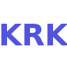
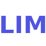
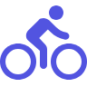

<!-- <div class="search-course button-center">

  
 
</div> -->
<div *ngIf="watchCourse">
  <watched-course (endWatch)="onWatchEnd()"></watched-course>
</div>
<div *ngIf="!watchCourse">
  <button *ngIf="searchEnd && checkPrev()" (click)="getPrevCourse()" color="primary" style="position:fixed;left:2px;top:140px"
    mat-mini-fab><mat-icon>chevron_left</mat-icon></button>
  <button *ngIf="searchEnd && checkNext()" (click)="getNextCourse()" color="primary" style="position:fixed;right:2px;top:140px"
    mat-mini-fab><mat-icon>chevron_right</mat-icon></button>
  <div class="box">
    <div class="row header">
      <div class="direction-menu">
        <button [disabled]="progressWidth > 0 && progressWidth < 100" (click)="changeDirection()">
          
          
        </button>
        <button [disabled]="progressWidth > 0 && progressWidth < 100" [ngClass]="{'active' : travelMode == 'WALKING'}" (click)="changeTravelMode('WALKING')"></button>
        <button [disabled]="progressWidth > 0 && progressWidth < 100" [ngClass]="{'active' : travelMode == 'BICYCLING'}" (click)="changeTravelMode('BICYCLING')"></button>
        <button [disabled]="progressWidth > 0 && progressWidth < 100" [ngClass]="{'active' : travelMode == 'DRIVING'}" (click)="changeTravelMode('DRIVING')"></button>
      </div>
      <div style="padding-top:10px;text-align: center;font-size: 14px; background-color: #5255e0; height: 110px;">
        <div *ngIf="!searchEnd">Wybierz kierunek
          <div style="color:white">(LIM - do Limanowej, KRK - w strone Krakowa)</div>
          <div>oraz sposób dotarcia na przystanek</div>
        </div>
        <div *ngIf="searchEnd">
          <div>Czas dojścia na przystanek: <span style="color:white">{{nearStop.data.duration.text}}</span></div>
          <div style="height:35px">Maxbus będzie o <span style="color:white" class='time'>{{nearCourse.firstStop.timeString}}</span></div>
          <div>na przystanku <span style="color:white" class='place'>{{nearStop.city}}</span></div>
          <div><span style="color:white;font-size: 13px">{{resolveDirection()}}</span></div>
        </div>
        <div *ngIf="progressWidth > 0 && progressWidth < 100">
          <mat-progress-bar color="warn" mode="determinate" value="{{progressWidth}}"></mat-progress-bar>
        </div>
      </div>
    </div>
    <div *ngIf="searchEnd" style="text-align: center;font-size: 14px;border-top: #341a70 solid 2px; background-color: #5255e0;">
      <button [disabled]="nearCourse.traficIsCalculate" style="width:150px" mat-button (click)="calculateTrafic()">Uwzglednij
        korki</button><button style="width:150px;margin-left:15px" (click)="go()" mat-button>Jedź</button>
    </div>
    <div id="mapStart" class="row content flex-map">
    </div>
  </div>
  <div [ngClass]="{'notification-hidden' : hideNotification}" (click)="notificationClick()" class="notification">
    <span [ngClass]="{'unread-message' : message.unread}" class="app-version">{{appVersion}}</span>
    <span style="font-size: 20px;float:left;margin-top: -3px;margin-left:10px">{{message.text}}</span>
  </div>
</div>